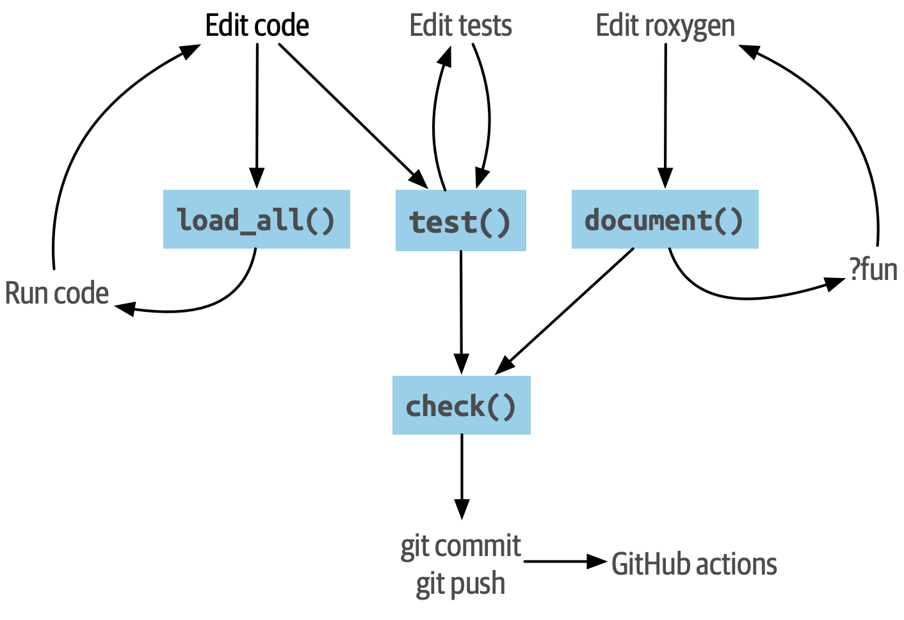

1 The Whole Game
剧透警告！
本章介绍了一个小型示例程序包的开发。 这是为了在我们深入研究 R 包的关键组件之前，描绘开发的大图景并提出对一个工作流程的建议。
为了保持快节奏，我们利用了 devtools 程序包和 RStudio IDE 中的现代化的便利功能。 在之后的章节中，我们将更详细地介绍它们能帮助我们做些什么。
本章是独立的，因为完成练习并不是继续本书其余部分的严格要求，但是我们强烈建议您继续学习并与我们一起创建这个玩具包。
1.1 Load devtools and friends
您可以从任何活动的 R 会话启动你的新包。 您无需担心您是否处于现有项目或新项目中。 我们使用的函数确保我们为包创建一个新的干净项目。
加载 devtools 包，它是一组支持包开发各个方面的包的公共面孔。 其中最明显的是 usethis 包，您将看到它也正在加载。
你有旧版本的 devtools 吗？ 将您的版本与我们的版本进行比较，并在必要时进行升级。
packageVersion("devtools")
#> [1] '2.4.5'1.2 Toy package: regexcite
为了帮助您完成整个过程，我们使用 devtools 中的各种函数从头开始构建一个小玩具包，具有已发布包中常见的功能：
- 满足特定需求的函数，在本例中是使用正则表达式的助手。
- 版本控制和开放的开发过程。
- 这在您的工作中是完全可选的，但强烈推荐。您将看到 Git 和 GitHub 如何帮助我们公开玩具包的所有中间阶段。
- 访问已建立的安装工作流程、获得帮助和检查质量。
我们称这个包为 regexcite，它包含几个函数，可以使使用正则表达式的常见任务变得更容易。 请注意，这些功能非常简单，我们在这里仅将它们用作指导您完成包开发过程的一种方式。 如果您正在寻找使用正则表达式的实际帮助程序，有几个合适的 R 包可以解决这个问题：
同样，regexcite 包本身只是一个用于演示使用 devtools 进行包开发的典型工作流程的工具。
1.3 Preview the finished product
regexcite 包在其开发过程中使用 Git 版本控制系统进行跟踪。 这完全是可选的，您当然可以在不实现它的情况下进行。 一个很好的附带好处是我们最终将它连接到 GitHub 上的远程存储库，这意味着您可以通过访问 GitHub 上的 regexcite 看到我们正在努力取得的辉煌成果：https://github.com/jennybc/regexcite。 通过检查 commit history，尤其是 diffs，您可以准确地看到在下面列出的过程的每个步骤中发生了什么变化。
1.4 create_package()
调用 create_package() 在计算机上的目录中初始化一个新包。 create_package() 将自动创建该目录，如果该目录尚不存在（通常是这种情况）。 关于更多创建包的信息，请参见 Section 4.1。
慎重选择在您的计算机上创建此包的位置。 它可能应该在您的主目录中的某个位置，与您的其他 R 项目一起。 它不应嵌套在另一个 RStudio Project、R package 或 Git repo 中。 它也不应该在 R package library 中，它包含已经构建和安装的包。 将我们在此处创建的源码包转换为已安装的包是 devtools 的一部分。 不要试图为它做 devtools 的工作！
一旦您选择了创建此包的位置，请将您选择的路径替换为 create_package() 调用，如下所示：
create_package("~/path/to/regexcite")为了创建这本书，我们必须在一个临时目录中工作，因为这本书是在云端以非交互方式构建的。 在幕后，我们正在执行自己的 create_package() 命令，但如果我们的输出与您的略有不同，请不要感到惊讶。
#> ✔ Creating 'C:/Users/13081/AppData/Local/Temp/Rtmp2BQsY2/regexcite/'
#> ✔ Setting active project to 'C:/Users/13081/AppData/Local/Temp/Rtmp2BQsY2/regexcite'
#> ✔ Creating 'R/'
#> ✔ Writing 'DESCRIPTION'
#> Package: regexcite
#> Title: What the Package Does (One Line, Title Case)
#> Version: 0.0.0.9000
#> Authors@R (parsed):
#> * First Last <first.last@example.com> [aut, cre] (YOUR-ORCID-ID)
#> Description: What the package does (one paragraph).
#> License: `use_mit_license()`, `use_gpl3_license()` or friends to pick a
#> license
#> Encoding: UTF-8
#> Roxygen: list(markdown = TRUE)
#> RoxygenNote: 7.2.3
#> ✔ Writing 'NAMESPACE'
#> ✔ Writing 'regexcite.Rproj'
#> ✔ Adding '^regexcite\\.Rproj$' to '.Rbuildignore'
#> ✔ Adding '.Rproj.user' to '.gitignore'
#> ✔ Adding '^\\.Rproj\\.user$' to '.Rbuildignore'
#> ✔ Setting active project to '<no active project>'如果您在 RStudio 中工作，您应该会发现自己在 RStudio 的一个新实例中，打开到您的新 regexcite package（and Project）中。 如果您不知何故需要手动执行此操作，请导航到目录并双击 regexcite.Rproj。 RStudio 对包有特殊处理，您现在应该在与环境（Environment）和历史记录（History）相同的窗格中看到构建（Build）选项卡。
您可能需要再次调用 library(devtools)，因为 create_package() 可能已将您带入新包中的新 R 会话。
这个新目录中有什么，它也是一个 R 包，并且可能是一个 RStudio Project？ 这是一个清单（在本地，您可以查阅 Files 窗格）：
| path | type |
|---|---|
| .gitignore | file |
| .Rbuildignore | file |
| DESCRIPTION | file |
| NAMESPACE | file |
| R | directory |
| regexcite.Rproj | file |
在 Files 窗格中，转到 More (gear symbol) > Show Hidden Files 以切换隐藏文件（又名 “dotfiles”）的可见性。 始终可以看到少数几个，但有时您希望看到所有这些。
-
.Rbuildignore列出了我们需要保留但在从源代码构建 R 包时不应包含的文件。 如果您不使用 RStudio，create_package()一开始可能不会创建此文件（也不会创建.gitignore），因为没有需要忽略的与 RStudio 相关的机制。 但是，无论您使用什么编辑器，您都可能在某个时候需要.Rbuildignore。 Section 3.3.1 对此进行了更详细的讨论。 -
.Rproj.user, 如果有的话，它是 RStudio 内部使用的目录。 -
.gitignore为 Git 的使用做好准备，它将忽略一些由 R 或 RStudio 创建的标准的幕后文件。 即使您不打算使用 Git，它也是没有害处的。 -
DESCRIPTION提供有关您的包的 metadata。 我们很快将开始编写它，Chapter 9 涵盖了DESCRIPTION文件的一般主题。 -
NAMESPACE声明了程序包导出以供外部使用的函数以及程序包从其他包导入的外部函数。 现在，除了一个注释声明这是一个我们不会手工编辑的文件外，它是空的。 -
R/目录是程序包的“业务端”。 它很快将包含带有函数声明的.R文件。 -
regexcite.Rproj是使此目录成为 RStudio Project 的文件。 即使您不使用 RStudio，此文件也是无害的。 或者，您可以通过create_package(..., rstudio = FALSE)来禁止其创建。 更多内容请参见 Section 4.2。
1.5 use_git()
regexcite 目录是一个 R source package 和一个 RStudio Project。 现在我们使用 use_git() 将它也变成一个 Git repository。 （顺便说一下，use_git() 适用于任何项目，无论它是否是 R 包。）
use_git()
#> ✔ Initialising Git repo
#> ✔ Adding '.Rhistory', '.Rdata', '.httr-oauth', '.DS_Store', '.quarto' to '.gitignore'在交互式会话中，系统将询问您是否要在此处提交（commit）这些文件，您应该接受这个提议。 在幕后，我们还将提交（commit）这些相同的文件。
那么这个包有什么变化呢？ 仅仅是创建了 .git 目录，该目录在大多数环境中都是隐藏的，包括 RStudio 文件浏览器。 但是它的存在证明我们确实在这里初始化了 Git repo。
| path | type |
|---|---|
| .git | directory |
如果您使用的是 RStudio，它可能会请求在此项目中重新启动。 您可以通过退出手动执行此操作，然后双击 regexcite.Rproj 重新启动 RStudio。 现在，除了包开发支持之外，您还可以在 Environment/History/Build 窗格的 Git 选项卡中访问基本的 Git 客户端。
单击 History （时钟图标），如果您愿意，您将看到通过 use_git() 进行的初始提交（initial commit）：
| commit | author | message |
|---|---|---|
| 9c6a0fbb2b… | zhenghu 1308155474@qq.com | Initial commit |
只要您设置了 RStudio + Git 集成，RStudio 可以在任何项目中初始化 Git repository，即使它不是 R 包项目。 依次点击 Tools > Version Control > Project Setup。 然后选择 Version control system: Git 和 initialize a new git repository for this project。
1.6 Write the first function
处理字符串时一个相当常见的任务是需要将单个字符串拆分成多个部分。 base R 中的 strsplit() 函数就是这样做的。
(x <- "alfa,bravo,charlie,delta")
#> [1] "alfa,bravo,charlie,delta"
strsplit(x, split = ",")
#> [[1]]
#> [1] "alfa" "bravo" "charlie" "delta"仔细查看返回值。
这个返回值的形状常常让人们感到惊讶，或者至少让他们感到不便。 输入是长度为 1 的字符向量，输出是长度为 1 的列表。 鉴于 R 的矢量化基本趋势，这是完全有道理的。 但有时它仍然有点无赖。 通常你知道你的输入是一个标量，即它只是一个字符串，并且真的希望输出是它的部分的字符向量。
这导致 R 用户采用各种 “unlist”-ing 结果的方法：
第二种更安全的解决方案是 regexcite 的初始函数的基础：strsplit1()。
strsplit1 <- function(x, split) {
strsplit(x, split = split)[[1]]
}本书不教你如何在 R 中编写函数。 如果想了解更多，请参阅 R for Data Science 的 Functions chapter 和 Advanced R 的 Functions chapter。
strsplit1() 的名称是对非常方便的 paste0() 的致敬，它于 2012 年首次出现在 R 2.15.0 中。 创建 paste0() 是为了解决将字符串粘贴在一起的极其常见的用例，而无需使用分隔器。 paste0() 被亲切地描述为 “statistical computing’s most influential contribution of the 21st century”。
strsplit1() 函数非常鼓舞人心，它现在是 stringr 包中的一个真正的函数：stringr::str_split_1()！
1.7 use_r()
你应该把 strsplit1() 的定义放在哪里？ 将其保存在包的 R/ 子目录中的 .R 文件中。 一个合理的起点是为包中每个面向用户的函数创建一个新的 .R 文件，并以函数命名文件。 随着添加更多函数，您会想要放松这一点，并开始将相关功能分组在一起。 我们将把 strsplit1() 的定义保存在文件 R/strsplit1.R 中。
函数 use_r() 将帮助我们在 R/ 目录下创建或打开一个脚本文件。 当您在 .R 文件和关联测试的文件之间互相切换时，它确实在成熟的程序包中十分有用。 但是，即使在这里，在 Untitled4 中工作时，它也可以避免您因为太投入而忘记了当前工作的目录。
use_r("strsplit1")
#> • Edit 'R/strsplit1.R'将 strsplit1() 的定义放入 R/strsplit1.R 中，并保存。 文件 R/strsplit1.R 不应包含我们最近执行的任何其他顶级代码，例如练习输入 x 的定义、library(devtools) 或 use_git()。 这预示着您在从编写 R scripts 转换为编写 R packages 时需要进行调整。 Packages 和 scripts 使用不同的机制来声明它们对其他软件包的依赖关系以及存储示例或测试代码。 我们将在 Chapter 6 进一步探讨这个问题。
1.8 load_all()
我们如何测试 strsplit1()？ 如果这是一个普通的 R 脚本，我们可能会使用 RStudio 将函数定义发送到 R 控制台并在全局环境中定义 strsplit1()。 或者也许我们会调用 source("R/strsplit1.R")。 然而，对于包开发，devtools 提供了一种更强大的方法。
调用 load_all() 函数以便可以使用 strsplit1() 进行实验。
load_all()
#> ℹ Loading regexcite现在调用 strsplit1(x) 看看它是如何工作的。
(x <- "alfa,bravo,charlie,delta")
#> [1] "alfa,bravo,charlie,delta"
strsplit1(x, split = ",")
#> [1] "alfa" "bravo" "charlie" "delta"请注意，load_all() 函数已经使得 strsplit1() 函数可用，尽管它并不存在于全局环境中。
如果你看到的是 TRUE 而不是 FALSE，那说明你仍在使用基于脚本的工作流并获取函数。 以下是如何重新回到正轨：
- 清空全局环境并重新启动 R。
- 使用
library(devtools)重新附加 devtools，然后用load_all()重新加载 regexcite。 - 重新定义测试输入
x，并再次调用strsplit1(x, split = ",")。这应该可以工作！ - 再次运行
exists("strsplit1", where = globalenv(), inherits = FALSE)，你应该会看到FALSE。
load_all() 函数模拟了构建（building）、安装（installing）、附加（attaching） regexcite 包的过程。 随着您的软件包积累更多的功能，一些被导出（exported），一些不是，有些调用彼此，有些调用依赖于其他软件包的函数，在全局环境中定义函数进行测试驱动比起使用 load_all() 来说并不能给您一个更准确地感知软件包正在如何开发。 而且 load_all() 允许比实际构建、安装和附加软件包更快速地迭代。 请参见 Section 4.4 以获取有关 load_all() 的更多信息。
回顾一下我们到目前为止所做的事情：
- 我们编写了第一个函数，
strsplit1()，将字符串拆分成字符向量（而不是包含字符向量的列表）。 - 我们使用
load_all()快速使该函数可供交互式使用，就像我们构建并安装了 regexcite，并通过library(regexcite)附加它一样。
RStudio 在 Build 菜单提供了 load_all() 的快速调用。它位于 Build 窗格中，通过 More > Load All 或者键盘快捷键 Ctrl + Shift + L (WIndows & Linux) 或者 Cmd + Shift + L (macOS) 调用。
1.8.1 Commit strsplit1()
如果您正在使用 Git，请使用您喜欢的方法提交新的 R/strsplit1.R 文件。 我们在幕后也是这样做的，以下是提交前后相关的差异。
diff --git a/R/strsplit1.R b/R/strsplit1.R
new file mode 100644
index 0000000..29efb88
--- /dev/null
+++ b/R/strsplit1.R
@@ -0,0 +1,3 @@
+strsplit1 <- function(x, split) {
+ strsplit(x, split = split)[[1]]
+}从这一小节之后，我们每一步之后都会进行提交（commit）。 请记住，these commits 可在公共存储库中找到。
1.9 check()
我们有经验可以证明 strsplit1() 是有效的。 但是，我们如何确保 regexcite 软件包的所有组成部分仍然有效？ 尽管这只是一个小改动，但检查一下还是很好的习惯。
在 shell 中执行 R CMD check 是检查 R 软件包是否完全正常工作的黄金标准。 在不离开 R 会话的情况下，check() 是运行这个命令的便捷方法。
请注意，check() 将生成相当多的输出，并针对交互式使用进行了优化。 我们在这里截取了一部分，并仅仅展示摘要。 本地运行 check() 的输出将有所不同。
check()── R CMD check results ─────────────────── regexcite 0.0.0.9000 ────
Duration: 36.8s
❯ checking DESCRIPTION meta-information ... WARNING
Non-standard license specification:
`use_mit_license()`, `use_gpl3_license()` or friends to pick a
license
Standardizable: FALSE
0 errors ✔ | 1 warning ✖ | 0 notes ✔阅读 check 的输出非常重要！ 尽可能早并经常性的解决出现的问题。 就像在 .R 和 .Rmd 文件上的增量开发一样，你越久不进行全面检查，找到并解决问题就会变得越困难。
此时，我们预计有 1 warning（and 0 errors, 0 notes）：
Non-standard license specification:
`use_mit_license()`, `use_gpl3_license()` or friends to pick a
license我们很快就会解决这个问题，方法就是按照它所说的去做。 你可以在 Section 4.5 中了解更多关于 check() 的内容。
RStudio 在 Build 菜单提供了 check() 的快速调用，它位于 Build 窗格中，通过 Check 或者键盘快捷键 Ctrl + Shift + E (WIndows & Linux) 或者 Cmd + Shift + E (MacOS) 调用。
1.10 Edit DESCRIPTION
DESCRIPTION 文件提供有关您的软件包的 metadata，并在 Chapter 9 中进行了全面介绍。 现在是查看 regexcite 当前 DESCRIPTION 的好时机。 您会发现它填充了样板内容，需要替换掉。
要添加自己的 metadata，请进行以下编辑：
- 将自己设置为 author。如果您没有 ORCID，则可以省略
comment = ...部分。 - 在
Title和Description字段中编写一些描述性文本。
在 RStudio 中可以使用 Ctrl + . 并键入 “DESCRIPTION” 来激活一个帮助程序，这样您可以轻松地打开该文件并编辑。 除了可以键入文件名外，还可以是函数名。 当一个包有很多文件时，这非常方便。
当您完成后，DESCRIPTION 文件应该看起来像这样：
Package: regexcite
Title: Make Regular Expressions More Exciting
Version: 0.0.0.9000
Authors@R:
person("Jane", "Doe", , "jane@example.com", role = c("aut", "cre"))
Description: Convenience functions to make some common tasks with string
manipulation and regular expressions a bit easier.
License: `use_mit_license()`, `use_gpl3_license()` or friends to pick a
license
Encoding: UTF-8
Roxygen: list(markdown = TRUE)
RoxygenNote: 7.1.2
1.11 use_mit_license()
我们目前在 DESCRIPTION 的 License 字段中有一个占位符，它故意无效并建议解决方案。
License: `use_mit_license()`, `use_gpl3_license()` or friends to pick a
license要为包配置有效许可证（license），请调用 use_mit_license()。
use_mit_license()
#> ✔ Adding 'MIT + file LICENSE' to License
#> ✔ Writing 'LICENSE'
#> ✔ Writing 'LICENSE.md'
#> ✔ Adding '^LICENSE\\.md$' to '.Rbuildignore'这将正确配置 MIT license 的 License 字段，该许可证（license）承诺在 LICENSE 文件中命名版权持有人和年份。 打开新创建的 LICENSE 文件并确认它看起来像这样：
YEAR: 2023
COPYRIGHT HOLDER: regexcite authors与其他许可证助手一样，use_mit_license() 函数还将完整的许可证副本放入 LICENSE.md 文件中，并将该文件添加到 .Rbuildignore 中。 最好的做法是使程序包的源代码中包含完整的许可证，例如在 GitHub 上，但 CRAN 不允许在软件包 tarball 中包含此文件。 您可以在 Chapter 12 了解更多有关许可证方面的信息。
1.12 document()
如果我们能像其他 R 函数一样获得 strsplit1() 的帮助文档，那不是很好吗？ 这需要您的包有一个特殊的 R 文档文件 man/strsplit1.Rd，它使用类似于 LaTeX 的 R 特殊标记语言编写。 幸运的是，我们不一定要直接编写该文件。
我们在源代码文件中的 strsplit1() 函数体上直接编写一个特别格式的注释，然后让名为 roxygen2 的软件包处理 man/strsplit1.Rd 的创建工作。 roxygen2 的使用和机制在 Chapter 16 中介绍。
如果您使用 RStudio，请在源码编辑器中打开 R/strsplit1.R，并将光标放置在 strsplit1() 函数定义中的某处。 现在点击 Code > Insert roxygen skeleton。 函数上方应该会出现一个非常特殊的注释模板，每行以 #' 开头。 RStudio 只插入了模板框架，因此您需要对其进行编辑。
如果您没有使用 RStudio，则自己创建该注释即可。 无论如何，都应修改它使其看起来像下面这样：
#' Split a string
#'
#' @param x A character vector with one element.
#' @param split What to split on.
#'
#' @return A character vector.
#' @export
#'
#' @examples
#' x <- "alfa,bravo,charlie,delta"
#' strsplit1(x, split = ",")
strsplit1 <- function(x, split) {
strsplit(x, split = split)[[1]]
}但我们还没有完成！ 我们仍然需要使用 document() 触发将这个新的 roxygen 注释转换为 man/strsplit1.Rd：
document()
#> ℹ Updating regexcite documentation
#> Setting `RoxygenNote` to "7.2.3"
#> ℹ Loading regexcite
#> Writing 'NAMESPACE'
#> Writing 'strsplit1.Rd'RStudio 在 Build 菜单提供了 document() 的快速调用。 它位于 Build 窗格中，通过 More > Document 或者键盘快捷键 Ctrl + Shift + D (WIndows & Linux) 或者 Cmd + Shift + D (MacOS) 调用。
您现在应该能够像这样预览您的帮助文件：
?strsplit1您将看到一条消息，如 “Rendering development documentation for ‘strsplit1’”，这提醒你基本上是在预览草稿文档。 也就是说，这份文档存在于你的软件包源代码中，但尚未出现在已安装的软件包中。 实际上，我们还没有安装 regexcite，但很快就会安装。 如果 ?strplit 对您不起作用，则可能需要先调用 load_all()，然后再重试。
另请注意，在正式构建和安装软件包之前，您的程序包的文档不会被正确连接。 这样可以改善一些细微之处，例如帮助文档之间的链接和程序包索引的创建。
1.12.1 NAMESPACE changes
除了将 strsplit1() 的特殊注释转换为 man/strsplit1.Rd 之外，对 document() 的调用还会根据 roxygen 注释中找到的 @export 标签更新 NAMESPACE 文件。 打开 NAMESPACE 进行检查。 其内容应该是：
# Generated by roxygen2: do not edit by hand
export(strsplit1)NAMESPACE 中的 export 指令是使得 strsplit1() 函数可以在通过 library(regexcite) 加载 regexcite 后对用户可用。 就像可以手动编写 .Rd 文件一样，您也可以自己明确地管理 NAMESPACE。 但我们选择将此委托给 devtools（和 roxygen2）。
1.13 check() again
regexcite 现在和以后都应该能够通过 R CMD check：0 errors, 0 warnings, 0 notes。
check()── R CMD check results ─────────────────── regexcite 0.0.0.9000 ────
Duration: 30.5s
0 errors ✔ | 0 warnings ✔ | 0 notes ✔
1.14 install()
由于我们现在已经有了一个最小的完整可行的产品，让我们通过 install() 将 regexcite 包安装到您的库中：
install()── R CMD build ─────────────────────────────────────────────────────
* checking for file 'C:\Users\13081\AppData\Local\Temp\Rtmp2BQsY2\regexcite/DESCRIPTION' ... OK
* preparing 'regexcite':
* checking DESCRIPTION meta-information ... OK
* checking for LF line-endings in source and make files and shell scripts
* checking for empty or unneeded directories
* building 'regexcite_0.0.0.9000.tar.gz'
Running "D:/1.study/R/R-4.2.0/bin/x64/Rcmd.exe" INSTALL \
"C:\Users\13081\AppData\Local\Temp\Rtmp2BQsY2/regexcite_0.0.0.9000.tar.gz" \
--install-tests
* installing to library 'D:/1.study/R/R-4.2.0/library'
* installing *source* package 'regexcite' ...
** using staged installation
** R
** byte-compile and prepare package for lazy loading
** help
*** installing help indices
** building package indices
** testing if installed package can be loaded from temporary location
** testing if installed package can be loaded from final location
** testing if installed package keeps a record of temporary installation path
* DONE (regexcite)RStudio 在 Build 菜单和 Build 窗格提供了类似的功能，通过 Install and Restart 调用。 快捷键 Ctrl + Shift + B（Windows 和 Linux）或 Cmd + Shift + B（macOS）。
安装完成后，我们可以像任何其他包一样添加和使用 regexcite。 让我们从头回顾一下我们的小例子。 这是重新启动 R 会话（R Session）并清理工作区的好时机。
library(regexcite)
x <- "alfa,bravo,charlie,delta"
strsplit1(x, split = ",")
#> [1] "alfa" "bravo" "charlie" "delta"Success!
1.15 use_testthat()
在一个示例中，我们已经对 strsplit1() 进行了简单测试。 我们可以通过一些单元测试（unit test）来形式化。 这意味着我们对于 strsplit1() 在各种输入数据下的正确结果得有一些具体的期望。
首先，我们声明我们将使用 testthat 包中的 use_testthat() 来编写单元测试：
use_testthat()
#> ✔ Adding 'testthat' to Suggests field in DESCRIPTION
#> ✔ Adding '3' to Config/testthat/edition
#> ✔ Creating 'tests/testthat/'
#> ✔ Writing 'tests/testthat.R'
#> • Call `use_test()` to initialize a basic test file and open it for editing.这将为您的软件包初始化单元测试机制。 它会在 DESCRIPTION 中添加 Suggests: testthat，创建 tests/testthat/ 目录，并添加脚本 tests/testthat.R。 您可能会注意到 testthat 被添加了一个最低版本 3.0.0 和第二个 DESCRIPTION 字段 Config/testthat/edition: 3。 我们将在 Chapter 13 中更详细地讨论这些细节。
但是，实际的测试仍然是由您来编写！
函数 use_test() 打开或创建一个测试文件。 您可以提供文件名，或者如果正在 RStudio 中编辑相关源文件，文件名将自动生成。 对于你们很多人来说，如果 R/strsplit1.R 是 RStudio 中活动的文件，那么只需调用 use_test() 即可。 但由于本书是非交互式构建的，因此必须明确提供 basename：
use_test("strsplit1")
#> ✔ Writing 'tests/testthat/test-strsplit1.R'
#> • Edit 'tests/testthat/test-strsplit1.R'这将创建文件 tests/testthat/test-strsplit1.R。 如果该文件已经存在，use_test() 函数只会打开它。 您会注意到新创建的文件中有一个示例测试代码 - 请删除该代码并用以下内容替换：
test_that("strsplit1() splits a string", {
expect_equal(strsplit1("a,b,c", split = ","), c("a", "b", "c"))
})这个测试验证了当分割字符串时，strsplit1() 是否能够给出预期结果。
在编写自己的代码时，请交互式地运行此测试。 如果找不到 test_that() 或 strsplit1()，那么说明您可能需要调用 load_all()。
今后，您的大多数测试将通过 test() 以批量和远程方式运行：
test()
#> ℹ Testing regexcite
#> ✔ | F W S OK | Context
#>
#> ⠏ | 0 | strsplit1
#> ✔ | 1 | strsplit1
#>
#> ══ Results ═════════════════════════════════════════════════════════
#> [ FAIL 0 | WARN 0 | SKIP 0 | PASS 1 ]RStudio 在 Build 菜单提供了 test() 的快速调用。 它位于 Build 窗格中，通过 More > Test package, 或者键盘快捷键 Ctrl + Shift + T (WIndows & Linux) 或者 Cmd + Shift + T (MacOS) 调用。
每当您使用 check() 检查程序包时，您的测试也会运行。 这样，您基本上就可以使用自己的一些特定于您的包的检查代码来增强标准检查。 最好使用 covr package 跟踪该测试所执行的源代码的比例。 更多详细信息请参见 Chapter 13。
1.16 use_package()
在自己的包中，您不可避免地会想要使用另一个包中的函数。 我们需要使用特定于包的方法来声明我们需要的其他软件包（i.e. our dependencies），并在我们的软件包中使用这些软件包。 如果您计划将软件包提交到 CRAN，请注意，这甚至适用于您认为“始终可用”的软件包中的函数，例如 stats :: median() 或 utils :: head()。
当使用 R 正则表达式函数时，常见问题是不确定是否请求 perl = TRUE 还是 perl = FALSE。 然后通常有但并非总是有其他参数来改变模式匹配方式，例如 fixed、ignore.case 和 invert 等等。 很难跟踪哪个函数使用哪个参数以及参数如何交互，因此很少有用户能够在不阅读文档的情况下掌握这些细节。
stringr 包“提供了一组协调一致的功能，旨在使处理字符串尽可能简单”。 特别地，在每个地方都使用一个正则表达式系统（ICU regular expressions）并且在每个功能中都使用相同界面来控制匹配行为（例如大小写敏感性）。 有些人发现这更容易内化和编程实现。 假设您决定基于 stringr（and stringi）构建 regexcite 而不是 base R 的正则表达式函数。
首先，使用 use_package() 声明您通常意图使用 stringr 命名空间中的一些功能：
use_package("stringr")
#> ✔ Adding 'stringr' to Imports field in DESCRIPTION
#> • Refer to functions with `stringr::fun()`这会将 stringr 包添加到 DESCRIPTION 的 Imports 字段中。 这就是它所做的一切。
让我们重新审视 strsplit1() 以使其更像 stringr。 这是对它的新看法1：
请注意：
- 我们将函数重命名为
str_split_one()，以表示它是stringr::str_split()的包装器。 - 采用了
stringr::str_split()中的参数名称。现在我们有string和pattern（以及n），而不是x和split。 - 引入一些参数检查和边缘情况处理。这与切换到 stringr 无关，并且在基于
strsplit()构建的版本中同样有益。 - 调用
stringr::str_split()时使用package::function()形式。这指定我们要从stringr命名空间调用str_split()函数。 从另一个软件包调用函数有多种方法，本文介绍的方法在 Chapter 11 中完整解释。
新定义的函数应该写在哪里？ 如果我们想继续遵循将 .R 文件命名为其定义功能的约定，则现在需要进行一些繁琐的文件操作。 因为这在实际生活中经常发生，所以我们有 rename_files() 函数，可以协调 R/ 下文件及其相关伴随文件夹 test/ 的重命名。
rename_files("strsplit1", "str_split_one")
#> ✔ Moving 'R/strsplit1.R' to 'R/str_split_one.R'
#> ✔ Moving 'tests/testthat/test-strsplit1.R' to 'tests/testthat/test-str_split_one.R'请记住：文件名工作纯粹是出于理想。 我们仍然需要更新这些文件的内容！
这是 R/str_split_one.R 的更新内容。 除了更改函数定义外，我们还更新了 roxygen 头文件以反映新参数，并包括展示 stringr 功能的示例。
#' Split a string
#'
#' @param string A character vector with, at most, one element.
#' @inheritParams stringr::str_split
#'
#' @return A character vector.
#' @export
#'
#' @examples
#' x <- "alfa,bravo,charlie,delta"
#' str_split_one(x, pattern = ",")
#' str_split_one(x, pattern = ",", n = 2)
#'
#' y <- "192.168.0.1"
#' str_split_one(y, pattern = stringr::fixed("."))
str_split_one <- function(string, pattern, n = Inf) {
stopifnot(is.character(string), length(string) <= 1)
if (length(string) == 1) {
stringr::str_split(string = string, pattern = pattern, n = n)[[1]]
} else {
character()
}
}不要忘记更新测试文件！
这里是 tests/testthat/test-str_split_one.R 的更新内容。 除了函数名称和参数的更改外，我们还添加了几个测试。
test_that("str_split_one() splits a string", {
expect_equal(str_split_one("a,b,c", ","), c("a", "b", "c"))
})
test_that("str_split_one() errors if input length > 1", {
expect_error(str_split_one(c("a,b","c,d"), ","))
})
test_that("str_split_one() exposes features of stringr::str_split()", {
expect_equal(str_split_one("a,b,c", ",", n = 2), c("a", "b,c"))
expect_equal(str_split_one("a.b", stringr::fixed(".")), c("a", "b"))
})在我们测试新的 str_split_one() 函数之前，需要调用 document()。 为什么呢？记住，document() 有两个主要作用：
- 将 roxygen 注释转换为适当的 R 文档。
- 重新生成
NAMESPACE。
第二个作用在这里尤其重要，因为我们将不再导出 strsplit1() 并且新导出 str_split_one()。 不要被关于 "Objects listed as exports, but not present in namespace: strsplit1" 的 warning 所困扰。 当你从命名空间中删除某些内容时，总是会发生这种情况。
document()
#> ℹ Updating regexcite documentation
#> ℹ Loading regexcite
#> Warning: Objects listed as exports, but not present in namespace:
#> • strsplit1
#> Writing 'NAMESPACE'
#> Writing 'str_split_one.Rd'
#> Deleting 'strsplit1.Rd'通过 load_all() 模拟包安装来试用新的 str_split_one() 函数：
load_all()
#> ℹ Loading regexcite
str_split_one("a, b, c", pattern = ", ")
#> [1] "a" "b" "c"
1.17 use_github()
您已经看到我们在 regexcite 开发过程中进行提交的记录。 您可以在 https://github.com/jennybc/regexcite 上查看一个指示性历史记录。 我们使用版本控制并决定公开开发过程，这意味着您可以检查每个开发阶段的 regexcite 源代码状态。 通过查看所谓的差异，您可以精确地了解每个 devtools 辅助函数如何修改构成 regexcite 包的源文件。
如何将本地 regexcite 软件包和 Git 存储库连接到 GitHub 上的配套存储库？ 以下是三种方法：
-
use_github()是我们一直以来推荐的帮助函数。 我们不会在此处演示它，因为它需要在您的主机端进行一些特殊的设置。 并且我们也不想每次构建此书时都拆除并重建公共 regexcite 软件包。 - 首先设置 GitHub repo！ 听起来有些违反直觉，但将工作放入 GitHub 最简单的方法是从那里开始初始化，然后使用 RStudio 开始在同步本地副本中工作。 该方法在 Happy Git 的工作流 New project, GitHub first 和 Existing project, GitHub first 中有描述。
- 命令行 Git 始终可用于事后添加远程存储库。 这在 Happy Git 的工作流 Existing project, GitHub last 中有描述。
任何这些方法都将把您的本地 regexcite 项目连接到一个 GitHub repo（公共或私有），您可以使用内置于 RStudio 中的 Git 客户端进行 push 或 pull。 在 Chapter 20 中，我们详细介绍了为什么值得将版本控制（e.g., Git）和特别是托管的版本控制（e.g. GitHub）纳入软件包开发过程。
1.18 use_readme_rmd()
现在你的软件包已经上传到 GitHub 上了，README.md 文件变得非常重要。 它是软件包的主页和欢迎页面，至少在你决定给它一个网站（see Chapter 19），添加一个 vignette（see Chapter 17）或将其提交到 CRAN 之前（see Chapter 22）。
use_readme_rmd() 函数会初始化一个基本的、可执行的 README.Rmd 文件供您编辑：
use_readme_rmd()
#> ✔ Writing 'README.Rmd'
#> ✔ Adding '^README\\.Rmd$' to '.Rbuildignore'
#> • Update 'README.Rmd' to include installation instructions.
#> ✔ Writing '.git/hooks/pre-commit'除了创建 README.Rmd 之外，这还向 .Rbuildignore 添加了一些行，并创建了一个 Git pre-commit hook，以帮助您保持 README.Rmd 和 sync 中的 README.md 同步。
README.Rmd 已经包含以下部分：
- 描述软件包的目的。
- 提供安装说明。如果在调用
use_readme_rmd()时检测到 GitHub remote，则该部分将预先填充有关如何从 GitHub 安装的说明。 - 展示一些使用方法。
如何填写这个框架？ 可以自由地从 DESCRIPTION 和任何正式或非正式测试或示例中复制内容。 任何东西都比没有好。 这很有帮助，因为人们可能不会安装您的软件包并逐个查看帮助文件以了解如何使用它。
我们喜欢使用 R Markdown 编写 README，这样它就可以显示实际用法。 同时加入实时代码也使得您的 README 不太可能过时，并与您的实际软件包保持同步。
要进行自己的编辑，请打开 README.Rmd 进行编辑（如果尚未完成）。 确保其中显示了 str_split_one() 函数的某些用法示例。
我们使用的 README.Rmd 在此处： README.Rmd，以下是其内容：
---
output: github_document
---
<!-- README.md is generated from README.Rmd. Please edit that file -->
```{r, include = FALSE}
knitr::opts_chunk$set(
collapse = TRUE,
comment = "#>",
fig.path = "man/figures/README-",
out.width = "100%"
)
```
**NOTE: This is a toy package created for expository purposes, for the second edition of [R Packages](https://r-pkgs.org). It is not meant to actually be useful. If you want a package for factor handling, please see [stringr](https://stringr.tidyverse.org), [stringi](https://stringi.gagolewski.com/),
[rex](https://cran.r-project.org/package=rex), and
[rematch2](https://cran.r-project.org/package=rematch2).**
# regexcite
<!-- badges: start -->
<!-- badges: end -->
The goal of regexcite is to make regular expressions more exciting!
It provides convenience functions to make some common tasks with string manipulation and regular expressions a bit easier.
## Installation
You can install the development version of regexcite from [GitHub](https://github.com/) with:
``` r
# install.packages("devtools")
devtools::install_github("jennybc/regexcite")
```
## Usage
A fairly common task when dealing with strings is the need to split a single string into many parts.
This is what `base::strplit()` and `stringr::str_split()` do.
```{r}
(x <- "alfa,bravo,charlie,delta")
strsplit(x, split = ",")
stringr::str_split(x, pattern = ",")
```
Notice how the return value is a **list** of length one, where the first element holds the character vector of parts.
Often the shape of this output is inconvenient, i.e. we want the un-listed version.
That's exactly what `regexcite::str_split_one()` does.
```{r}
library(regexcite)
str_split_one(x, pattern = ",")
```
Use `str_split_one()` when the input is known to be a single string.
For safety, it will error if its input has length greater than one.
`str_split_one()` is built on `stringr::str_split()`, so you can use its `n` argument and stringr's general interface for describing the `pattern` to be matched.
```{r}
str_split_one(x, pattern = ",", n = 2)
y <- "192.168.0.1"
str_split_one(y, pattern = stringr::fixed("."))
```别忘了渲染它以生成 README.md！ pre-commit hook 应该在你尝试提交 README.Rmd 时提醒你，但不是 README.md，并且当 README.md 看起来过时时也会提醒。
最好的方法是使用 build_readme() 来渲染 README.Rmd，因为它会确保使用您包的最新版本进行渲染，即安装当前源的临时副本。
build_readme()
#> ℹ Installing regexcite in temporary library
#> ℹ Building
#> 'C:/Users/13081/AppData/Local/Temp/Rtmp2BQsY2/regexcite/README.Rmd'您只需 visiting regexcite on GitHub 即可查看呈现的 README.md。
最后，不要忘记进行最后一次提交（commit）。 如果您使用的是 GitHub，则还可以推送（push）。
1.19 The end: check() and install()
让我们再次运行 check() 以确保一切正常。
check()── R CMD check results ─────────────────── regexcite 0.0.0.9000 ────
Duration: 34.4s
0 errors ✔ | 0 warnings ✔ | 0 notes ✔regexcite 应该没有 errors, warnings or notes。 现在是重新构建和安装它的最好时机。 庆祝一下！
install()── R CMD build ─────────────────────────────────────────────────────
* checking for file 'C:\Users\13081\AppData\Local\Temp\Rtmp2BQsY2\regexcite/DESCRIPTION' ... OK
* preparing 'regexcite':
* checking DESCRIPTION meta-information ... OK
* checking for LF line-endings in source and make files and shell scripts
* checking for empty or unneeded directories
* building 'regexcite_0.0.0.9000.tar.gz'
Running "D:/1.study/R/R-4.2.0/bin/x64/Rcmd.exe" INSTALL \
"C:\Users\13081\AppData\Local\Temp\Rtmp2BQsY2/regexcite_0.0.0.9000.tar.gz" \
--install-tests
* installing to library 'D:/1.study/R/R-4.2.0/library'
* installing *source* package 'regexcite' ...
** using staged installation
** R
** tests
** byte-compile and prepare package for lazy loading
** help
*** installing help indices
** building package indices
** testing if installed package can be loaded from temporary location
** testing if installed package can be loaded from final location
** testing if installed package keeps a record of temporary installation path
* DONE (regexcite)请随意访问 GitHub 上的 regexcite package，它正是在这里开发的。 提交历史记录反映了每个单独的步骤，因此可以使用 diff 来查看随着包的发展，哪些文件被添加和修改。 本书的其余部分将更详细地介绍您在这里看到的每一个步骤以及更多内容。
1.20 Review
本章旨在让您了解典型的包开发工作流程，总结为 Figure 1.1 中的图表。 您在此处看到的所有内容都在本章中有所涉及，但 GitHub 操作除外，您将在 Section 20.2.1 中了解更多信息。

下面是对您在本章中看到的关键函数的回顾，大致按照它们在开发过程中的角色进行组织。
这些函数设置包的一部分，通常每个包调用一次：
当您添加函数和测试或采用依赖项时，您将定期调用这些函数：
在开发过程中，您将每天或每小时多次调用这些函数：
回想一下，这个例子是如此鼓舞人心，以至于它现在是 stringr 包中的一个真正的函数：`stringr::str_split_1()`！↩︎